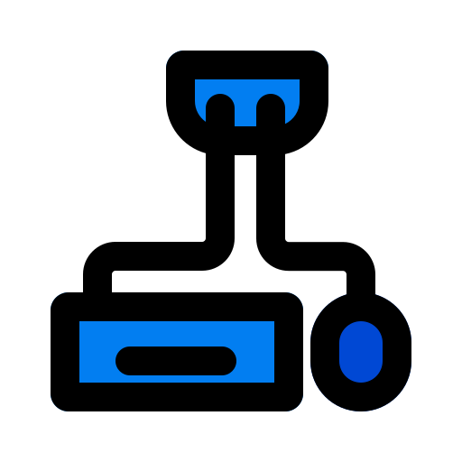

No vasto cosmos da cultura nerd, onde cada pixel conta uma história épica e cada frame transborda de emoção, surge o COFFE. Seja você um mestre estrategista em RTS, um herói destemido em RPGs de mundo aberto ou um competidor habilidoso em eSports, há sempre algo emocionante esperando por você.
Mas não para por aí, exploramos também o vasto universo dos animes. Dos clássicos que moldaram gerações aos lançamentos mais recentes que definem o que é ser um fã nos dias de hoje, nosso portal é sua porta de entrada para um reino de animação japonesa sem limites.

Além dos jogos e animes, estamos sempre um passo à frente, antecipando o futuro. Em breve, expandiremos nosso universo para incluir produtos exclusivos que todo verdadeiro nerd vai adorar. Desde colecionáveis até periféricos voltado para o conteudo geek e gamers, estamos preparando um arsenal de itens que transformarão sua paixão em estilo de vida.
E o melhor de tudo? o COFFE não é apenas um site, é uma comunidade. Um lugar onde você pode encontrar amigos, compartilhar seus gostos e discutir teorias de conspiração sobre o próximo grande lançamento ou simplesmente relaxar enquanto navega pelas novidades do mundo nerd.
Então, prepare-se para a aventura. Junte-se a nós no Universo Nerd Online, onde a próxima grande descoberta está sempre a um clique de distância. Seja você um guerreiro espacial, um mago habilidoso ou apenas alguém que aprecia uma boa história bem contada, há um lugar para você em nosso cosmos digital. Vamos explorar juntos tudo o que o século 21 tem a oferecer - e o que o futuro nos reserva. O universo nerd espera por você. Estamos prontos para embarcar nesta jornada épica. E você?